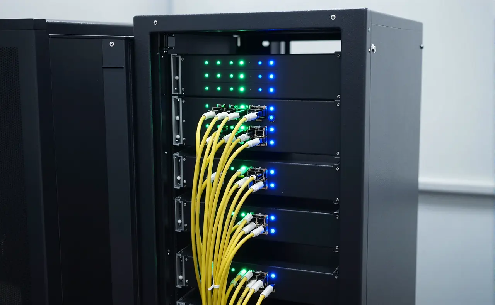

Website
Website không lên Google: những nguyên nhân thường gặp và cách kiểm tra từng bước
Website đã chạy vài tuần, gõ tên công ty lên Google vẫn không thấy đâu. Trước khi nghĩ đến chạy quảng cáo hay thuê SEO, hãy kiểm tra những lỗi cơ bản khiến Google không thể hoặc không muốn đưa trang của bạn vào kết quả. Bài này đi từng bước, từ lệnh tìm nhanh đến Google Search Console.

Website không lên Google thường rơi vào một trong bốn nhóm lý do: Google chưa biết đến trang (website mới, chưa có liên kết trỏ về, chưa gửi sitemap), trang đang bị chặn (thẻ noindex, robots.txt, mật khẩu, lỗi máy chủ), Google đã thấy nhưng chọn không lập chỉ mục (nội dung mỏng, trùng lặp, thẻ canonical trỏ sang trang khác), hoặc trang đã có trong chỉ mục nhưng xếp hạng quá thấp với từ khóa bạn gõ. Cách kiểm tra nhanh nhất là gõ site:tenmiencuaban.vn trên Google, sau đó dùng công cụ Kiểm tra URL trong Google Search Console để biết chính xác trạng thái từng trang.
Bài này đi theo đúng thứ tự một người làm kỹ thuật sẽ kiểm tra. Bạn không cần biết lập trình để làm các bước đầu; đến bước cần sửa mã, bạn sẽ biết chính xác phải nhờ đơn vị làm web sửa chỗ nào. Nếu website của bạn đang được xây mới, bài thiết kế website chuẩn SEO 2026 giúp tránh các lỗi này ngay từ đầu.
"Không lên Google" có ba nghĩa khác nhau
Trước khi sửa, hãy xác định bạn đang gặp tình huống nào, vì cách xử lý khác nhau hoàn toàn:
| Tình huống | Dấu hiệu | Nguyên nhân thường gặp | Kiểm tra bằng |
|---|---|---|---|
| Chưa được lập chỉ mục | Gõ site:tên miền không ra trang nào, hoặc thiếu trang quan trọng | Website mới, bị chặn, thiếu sitemap, không có liên kết | Lệnh site:, Kiểm tra URL trong Search Console |
| Đã lập chỉ mục nhưng không xếp hạng | Site: có ra trang, nhưng gõ từ khóa dịch vụ thì không thấy | Cạnh tranh cao, nội dung chưa đủ tốt, ít liên kết | Báo cáo Hiệu suất trong Search Console |
| Tìm tên thương hiệu không ra | Gõ đúng tên công ty, Google hiện doanh nghiệp khác | Tên trùng từ phổ biến, website mới, thiếu hồ sơ doanh nghiệp trên Google | Tìm tên kèm thành phố, kiểm tra Google Business Profile |
Phần lớn bài này xử lý tình huống thứ nhất, vì đó là lỗi kỹ thuật sửa được nhanh. Tình huống thứ hai là chuyện SEO dài hạn, còn tình huống thứ ba có phần riêng ở cuối bài.
Bước 1: kiểm tra nhanh bằng lệnh site:
Mở Google, gõ site:tenmiencuaban.vn (không có khoảng trắng sau dấu hai chấm, không cần https). Google sẽ liệt kê các trang thuộc tên miền mà nó đang có trong chỉ mục.
- Không ra kết quả nào: Google chưa lập chỉ mục trang nào. Có thể website quá mới, hoặc đang bị chặn toàn bộ. Chuyển sang bước 2 và 3.
- Ra trang chủ nhưng thiếu trang dịch vụ, bài viết: Google chưa tìm thấy hoặc chưa muốn lập chỉ mục các trang con. Kiểm tra sitemap và liên kết nội bộ.
- Ra cả những trang lạ: trang thử nghiệm, trang tìm kiếm nội bộ, trang có tham số. Đây là dấu hiệu trùng lặp, cần dọn dẹp.
Lệnh site: chỉ cho con số ước lượng, không chính xác tuyệt đối. Nó hữu ích để phát hiện vấn đề lớn, còn chẩn đoán từng trang phải dùng Search Console.
Bước 2: mở Google Search Console
Google Search Console là công cụ miễn phí của Google cho chủ website. Nếu chưa có, hãy thêm tài sản (property) và xác minh quyền sở hữu: tài sản loại Miền chỉ xác minh được bằng bản ghi DNS, còn tài sản loại Tiền tố URL có thêm các cách như thẻ HTML, tệp HTML, Google Analytics hoặc Google Tag Manager. Nếu đơn vị làm web đã cài giúp, hãy chắc chắn tài khoản Google của chính doanh nghiệp được thêm với quyền chủ sở hữu, không chỉ email của người làm web. Bài quản trị website sau bàn giao có hướng dẫn những báo cáo nên xem định kỳ.
Công cụ Kiểm tra URL
Dán đường dẫn của trang bạn muốn kiểm tra vào ô trên cùng. Kết quả cho biết trang có nằm trong chỉ mục của Google không, nếu không thì vì sao: bị chặn bởi robots.txt, có thẻ noindex, trang trả lỗi, hay Google chọn một trang khác làm bản chính. Khi đã sửa lỗi, bạn có thể bấm Yêu cầu lập chỉ mục để Google thu thập lại trang sớm hơn. Nút này không đảm bảo trang được lập chỉ mục, và bấm nhiều lần cũng không nhanh hơn.
Báo cáo lập chỉ mục trang
Trong mục Lập chỉ mục, báo cáo Trang liệt kê các trang đã và chưa được lập chỉ mục, nhóm theo lý do. Hai trạng thái hay gặp nhất với website nhỏ là "Đã phát hiện, hiện chưa được lập chỉ mục" (Discovered, currently not indexed: Google biết trang tồn tại nhưng chưa ghé thu thập) và "Đã thu thập dữ liệu, hiện chưa được lập chỉ mục" (Crawled, currently not indexed: Google đã đọc nhưng chưa đưa vào chỉ mục, thường liên quan chất lượng hoặc trùng lặp nội dung).
Bước 3: kiểm tra trang có đang bị chặn không
Thẻ noindex sót lại từ bản thử nghiệm
Đây là lỗi rất hay gặp ở website mới bàn giao. Trong lúc làm, bên thiết kế thường chặn Google để bản dở dang không bị lập chỉ mục, rồi quên gỡ khi ra mắt. Với WordPress, hãy vào Cài đặt, mục Đọc, xem ô yêu cầu công cụ tìm kiếm không lập chỉ mục có đang được đánh dấu không. Với website khác, mở trang, xem mã nguồn và tìm chữ noindex trong thẻ meta robots.
File robots.txt chặn nhầm
Mở tenmiencuaban.vn/robots.txt. Nếu thấy dòng Disallow: / dưới User-agent: *, toàn bộ website đang cấm máy tìm kiếm thu thập. Lưu ý một điểm hay bị hiểu sai: robots.txt chặn việc thu thập, không phải chặn lập chỉ mục. Trang bị chặn bằng robots.txt vẫn có thể hiện trên Google dạng chỉ có đường dẫn nếu có nơi khác liên kết tới, và Google cũng không đọc được thẻ noindex trên trang đó. Muốn trang không xuất hiện thì dùng noindex và để Google thu thập được.
Mật khẩu, lỗi máy chủ, chuyển hướng vòng
Trang yêu cầu đăng nhập, trang trả lỗi 5xx khi máy chủ quá tải, hoặc chuyển hướng qua lại giữa http và https, có www và không www, đều khiến Google bỏ qua. Công cụ Kiểm tra URL sẽ báo các lỗi này. Hosting quá yếu, thường xuyên chập chờn cũng làm Google giảm tần suất ghé thăm.
Nội dung chỉ hiện sau khi chạy JavaScript
Một số website dựng toàn bộ nội dung bằng JavaScript phía trình duyệt. Google có xử lý JavaScript, nhưng nếu nội dung tải chậm, cần bấm mới hiện, hoặc liên kết không phải thẻ <a href> thật, Google có thể không thấy. Trong Kiểm tra URL, chọn xem trang đã thu thập để biết Google thực sự nhìn thấy gì.

Bước 4: sitemap và liên kết nội bộ
Google tìm trang mới chủ yếu bằng cách đi theo liên kết. Một trang không có liên kết nào trỏ tới (trang mồ côi) rất khó được tìm thấy, kể cả khi nằm trong sitemap.
- Sitemap.xml: danh sách các trang bạn muốn Google biết. Hầu hết hệ thống quản trị nội dung tự tạo file này. Gửi đường dẫn sitemap trong Search Console, mục Sơ đồ trang web, rồi theo dõi số trang Google đọc được.
- Sitemap chỉ chứa trang thật: không đưa trang đã chuyển hướng, trang noindex, trang lỗi vào sitemap. Sitemap lẫn lộn làm Google kém tin vào nó.
- Liên kết từ menu và trang liên quan: mỗi trang dịch vụ nên được liên kết từ menu hoặc trang tổng; mỗi bài viết nên liên kết tới trang dịch vụ liên quan và ngược lại.
- Liên kết từ bên ngoài: trang mạng xã hội của doanh nghiệp, hồ sơ trên Google, danh bạ ngành, báo chí. Với website hoàn toàn mới, vài liên kết thật giúp Google phát hiện trang nhanh hơn.
Bước 5: nội dung mỏng và trang trùng lặp
Google không cam kết lập chỉ mục mọi trang nó thu thập. Khi đã đọc trang mà vẫn không đưa vào chỉ mục, nguyên nhân thường nằm ở nội dung:
- Nội dung mỏng: trang dịch vụ chỉ có vài dòng khẩu hiệu và một ảnh, trang sản phẩm chỉ có tên và giá. Không có gì đủ khác để Google thấy đáng hiển thị.
- Nội dung chép: mô tả sản phẩm chép từ nhà cung cấp, bài viết chép từ trang khác. Google thường chỉ giữ một bản và bỏ qua các bản giống.
- Nhiều trang gần giống nhau: hàng chục trang "dịch vụ tại quận X" chỉ khác tên quận. Hãy gộp lại hoặc viết riêng thật sự cho từng nơi.
- Trùng lặp kỹ thuật: cùng một trang mở được bằng http và https, có và không có www, có tham số lọc. Cần chuyển hướng 301 về một phiên bản và đặt thẻ canonical đúng.
- Canonical trỏ nhầm: mọi trang đều khai báo canonical về trang chủ, khiến Google hiểu các trang con là bản sao.
Tìm đúng tên công ty mà không ra
Nếu tên doanh nghiệp là từ phổ biến (ví dụ "Hoa Mai", "Phương Nam"), Google sẽ ưu tiên kết quả quen thuộc hơn. Hãy thử gõ tên kèm ngành và thành phố. Để Google hiểu tên đó là một doanh nghiệp cụ thể, cần sự nhất quán: cùng tên, địa chỉ, số điện thoại trên website, trang mạng xã hội và hồ sơ Google Business Profile. Hồ sơ này còn giúp doanh nghiệp hiện trên Google Maps; xem hướng dẫn trong bài đưa doanh nghiệp lên Google Maps.
Mất bao lâu để website lên Google
Google không công bố thời gian cố định. Với website mới, đã gửi sitemap và không có lỗi chặn, trang chủ thường được lập chỉ mục trong vài ngày đến vài tuần; các trang con có thể lâu hơn. Không có cách trả tiền cho Google để được lập chỉ mục nhanh hơn trong kết quả tự nhiên, và cũng không ai có thể đảm bảo trang lên top một từ khóa trong thời gian cụ thể. Nếu ai đó hứa như vậy, hãy hỏi kỹ họ định làm gì.
Sau khi trang đã có trong chỉ mục, việc xếp hạng cho từ khóa dịch vụ phụ thuộc chất lượng nội dung, tốc độ tải, trải nghiệm trên điện thoại và mức cạnh tranh của ngành. Bài Core Web Vitals và tốc độ website giải thích phần tốc độ.
Checklist kiểm tra theo thứ tự
- Gõ
site:tenmienđể biết Google đang có bao nhiêu trang. - Xác minh website trong Search Console bằng tài khoản của doanh nghiệp.
- Dùng Kiểm tra URL cho trang chủ và hai, ba trang dịch vụ quan trọng nhất.
- Tìm thẻ noindex trong mã nguồn và tùy chọn chặn công cụ tìm kiếm trong phần quản trị.
- Mở robots.txt, bảo đảm không có dòng chặn toàn bộ website.
- Kiểm tra website chỉ mở bằng một phiên bản: https, có hoặc không có www.
- Gửi sitemap.xml trong Search Console, bảo đảm sitemap chỉ chứa trang thật.
- Thêm liên kết từ menu, trang tổng và bài viết tới các trang chưa được lập chỉ mục.
- Viết lại các trang chỉ có vài dòng, bỏ nội dung chép.
- Yêu cầu lập chỉ mục cho trang đã sửa, chờ một đến hai tuần rồi xem lại báo cáo.
Website chuẩn lập chỉ mục từ đầu tại Dream Labs
Mọi website Dream Labs bàn giao đều có sitemap, robots.txt đúng, một phiên bản https duy nhất và các thẻ cơ bản cho máy tìm kiếm. Gói Cơ bản 8.000.000đ có SEO cơ bản và gắn Google Analytics. Gói Chuyên nghiệp 18.000.000đ thêm blog, trang quản trị để tự đăng bài và phần viết nội dung chuẩn SEO, hợp với doanh nghiệp muốn có khách từ Google lâu dài. Gói Cao cấp Liên hệ dành cho website nhiều trang, đa ngôn ngữ.
| Gói | Giá | Thời gian | Bao gồm |
|---|---|---|---|
| Cơ bản | 8.000.000đ | 7–10 ngày4 vòng sửa | Có mặt chuyên nghiệp trên Google và điện thoại trong khoảng 10 ngày, khách tìm thấy và liên hệ được ngay.
|
| Chuyên nghiệpPhổ biến nhất | 18.000.000đ | 14–21 ngày9 vòng sửa | Website riêng đúng tầm thương hiệu, tự đăng bài để có khách từ Google lâu dài, không phụ thuộc người làm.
|
| Cao cấp | Liên hệ | 30–45 ngàyKhông giới hạn trong phạm vi | Trải nghiệm đủ khác biệt để định vị cao cấp, bán hàng và tiếp khách trực tuyến, phục vụ cả khách nước ngoài.
|
Xem chi tiết tại trang dịch vụ thiết kế website và bảng giá. Nếu website hiện tại của bạn do bên khác làm và đang không lên Google, hãy gửi tên miền qua Zalo 0934 246 420, Dream Labs xem nhanh các lỗi cơ bản giúp bạn.
Câu hỏi thường gặp
Làm sao biết website đã được Google lập chỉ mục chưa?
Gõ site:tên miền trên Google để xem nhanh. Muốn biết chính xác từng trang, dùng công cụ Kiểm tra URL trong Google Search Console.
Website mới bao lâu thì lên Google?
Thường từ vài ngày đến vài tuần nếu không có lỗi chặn và đã gửi sitemap. Google không cam kết thời gian, các trang con có thể lâu hơn trang chủ.
Bấm Yêu cầu lập chỉ mục nhiều lần có nhanh hơn không?
Không. Một lần là đủ sau khi đã sửa lỗi. Nút này giúp Google thu thập lại sớm hơn nhưng không bảo đảm trang được đưa vào chỉ mục.
Robots.txt có ngăn trang hiện trên Google không?
Không hoàn toàn. Robots.txt chặn việc thu thập, trang vẫn có thể hiện dạng chỉ có đường dẫn nếu nơi khác liên kết tới. Muốn trang không xuất hiện, dùng thẻ noindex và để Google đọc được trang.
Trả tiền cho Google có giúp website lên nhanh hơn không?
Không, với kết quả tìm kiếm tự nhiên. Trả tiền chỉ áp dụng cho quảng cáo Google Ads, hiển thị ở vị trí có nhãn quảng cáo và dừng khi hết ngân sách.
Vì sao Google đã thu thập mà vẫn không lập chỉ mục trang?
Thường do nội dung mỏng, trùng lặp với trang khác hoặc canonical trỏ sang trang khác. Hãy viết lại nội dung cho đủ khác biệt, gộp các trang gần giống nhau rồi yêu cầu lập chỉ mục lại.
Đơn vị làm web có phải chịu trách nhiệm việc website không lên Google không?
Họ chịu trách nhiệm các lỗi kỹ thuật như noindex sót lại, robots.txt chặn nhầm, thiếu sitemap. Còn xếp hạng cho từ khóa phụ thuộc nội dung và cạnh tranh, không ai bảo đảm được vị trí.
Nguồn ảnh: ảnh minh họa do Dream Labs tạo bằng AI (ComfyUI · Z-Image Turbo), không phải ảnh chụp khách hàng hay dự án thật.
Bắt đầu cùng Dream Labs
Website của bạn vẫn chưa thấy trên Google?
Gửi tên miền qua Zalo cho Dream Labs. Chúng tôi xem nhanh các lỗi lập chỉ mục cơ bản và nói rõ cần sửa gì trước, miễn phí.